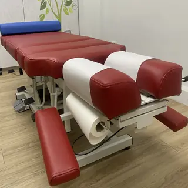

深層而溫和
床段落下時以短暫的震動輔助出力，師傅不需硬喬，力道更深層而溫和。
整復店 Sparrow Pose
調正姿態，
正雀是一間完全預約制的整復店，請先預約時間再前往。
到店後先了解身體狀況，以溫和、適中的力道一步步進行，並說明每個步驟的用意。

頓壓床幫助的是師傅：床段順勢落下，師傅不必用蠻力硬喬，力道更好拿捏。對你來說，就是更溫和、更細緻的過程。
床段落下時以短暫的震動輔助出力，師傅不需硬喬，力道更深層而溫和。
床面分成數段，師傅可以針對頭頸、上背、腰部、骨盆分別處理。
床面高度與角度可以變換，配合你的姿勢與需要放鬆的部位。
師父真的很細心，動作又溫柔，過程感受不到疼痛，原來不用痛得唉唉叫也能放鬆。
老師非常詳細解說，每個動作都會注意我是不是可以接受的力道，敏感部位還是會再次提醒，非常細心。
講解與工法都仔細，不會因為時間限制，馬虎的結束。
環境乾淨舒適，整復師很專業，會耐心詢問並解釋狀況。過程中力道適中，讓人覺得放鬆安心。
溫和整復，舒舒服服，長者沒有負擔。
老師非常有耐心地幫我處理和解釋給我聽，讓我知道原因和之後要注意的地方。
方案 A
基礎舒展
適合想快速放鬆、舒緩小範圍緊繃的人。
約 60 分鐘
原價 NT$2,300NT$1,400
方案 B
體態平衡、細一點
包含正面及側面體態，時間更充足，能涵蓋多個部位，適合講究平衡兼顧的人。
約 90 分鐘
原價 NT$3,500NT$2,200
方案 C
最細緻完美
兼顧全身、全方位的最高等級方案，沉浸在細緻與放鬆中，帶來最完整的舒緩體驗。
約 150 分鐘
原價 NT$5,700NT$3,500
方案 E
BUFF
臉部肌肉放鬆，適合常側睡或臉部長時間受壓的人；肌肉放鬆後，臉部線條也更顯柔和。
約 30 分鐘
NT$1,200
方案 D
上半身或下半身
快速針對上半身或下半身的痠痛，適合時間有限、想立即舒緩的人。
約 30 分鐘
NT$800
時間為大約，依當天狀況略有不同。
店主介紹
「細節決定成敗」
多數人不是不需要整復，而是已經習慣了沒有放鬆的體態。
十多年來，從腳底按摩、身體按摩、運動按摩，到整復與美式整復，一步步累積經驗。盡心服務，絕不敷衍。
預約與聯絡
完全預約制，請先預約再前往。
LINE ID：@sparrow520
只加好友店家不會收到通知，請記得傳訊息。